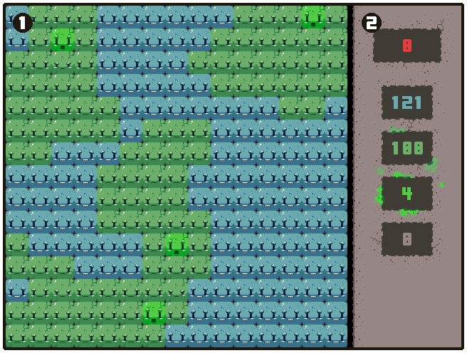

This is the game screen, there are two main segments of the game screen.
1. The Game Board
The game board is where the action happens, this is how you'll interact with the game and will see the main game playing out in front of you.
2. The Sidebar
The sidebar, whilst not interactive, is very important as it stores valuable information neccessary whilst playing the game. For example; how much currency you have; the number of healthy blocks; etc.
You can pause the game at any time, just press the 'P' key. From the pause screen you can press 'P' again to return to the game, or use the buttons to navigate to the menu or exit the game.
You need to stop the illness from spreading to all the healthy blocks on the board. The sickness spreads to the healthy blocks and the corruption spreads to the sickness blocks. Once a block becomes corrupt it cannot be saved and is permanently stuck.
If a sick block is blinking like this then it is about to become corrupt, without even needing to be in contact with another corrupt block. These blocks need to be handled immediately as they are very volatile.
You can heal sick blocks to turn them back to healthy ones. To do this the sick block must be in contact with one, or more, healthy blocks and then you just have to Left Click on the sick block to heal it. Healing a sick block gives you 15 points, these points can be used to create immune blocks.s
When you have enough points, you can make an immune block by Right Clicking on any healthy block on the board. Immune blocks cannot be turned sick or corrupt, they are used to block off the sickness permanently and protect the healthy blocks.
You must use both the healing of sickness and the placement of immune blocks to contain the sickness and stop the spreading, whilst having as many healthy blocks left on the game board as possible. The more healthy blocks the higher the end score.